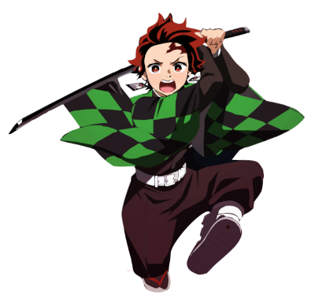

aqui vocÊ vera imagens que estão na mesma pasta
imagens que estão em subpastas também podem ser carregadas
Imagens externas também podem ser carregas, veja só:

As duas primeiras imagens carregadas estão dentro de seu computador, enquanto a ultima foi retirada de um servidor externo, não é demais? (Porém se o servidor cair, a imagem não estará mais disponivel para visualização)
Agora uma rapida aula de ingles
This is Tanjiro Kamado, he is my favorite demon slayer, he can control the fire breath with his sword, and kill all the demons. He carries his little sister called Nezuko in his back, she is very cute.
Favicon Adicionado dia 14 de março :3